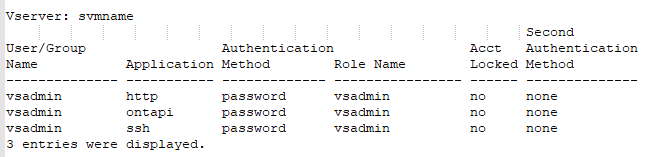
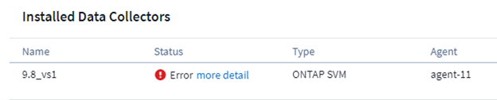

Sicherheit
Sicherheit
Konfiguration des ONTAP SVM Data Collector
 Änderungen vorschlagen
Änderungen vorschlagen
Workload Security verwendet Datensammler, um Datei- und Benutzerzugriffsdaten von Geräten zu erfassen.
Bevor Sie beginnen
-
Dieser Datensammler wird unterstützt durch:
-
Data ONTAP 9.2 und höher. Verwenden Sie für die beste Performance eine Data ONTAP-Version über 9.13.1.
-
SMB-Protokollversion 3.1 und früher.
-
NFS-Protokoll Version 4.0 und früher
-
FlexGroup wird von ONTAP 9.4 und höheren Versionen unterstützt
-
ONTAP Select wird unterstützt
-
-
Es werden nur SVMs vom Datentyp unterstützt. SVMs mit Infinite Volumes werden nicht unterstützt.
-
SVM hat mehrere Untertypen. Davon werden nur default, Sync_source und Sync_Destination unterstützt.
-
Ein Agent "Muss konfiguriert sein" Bevor Sie Datensammler konfigurieren können.
-
Stellen Sie sicher, dass Sie über einen richtig konfigurierten User Directory Connector verfügen, sonst werden bei Ereignissen kodierte Benutzernamen und nicht der tatsächliche Name des Benutzers (wie in Active Directory gespeichert) auf der Seite „Activity Forensics“ angezeigt.
-
Um eine optimale Performance zu erzielen, sollten Sie den FPolicy-Server so konfigurieren, dass er sich im gleichen Subnetz wie das Storage-System befindet.
-
Sie müssen eine SVM mit einer der folgenden beiden Methoden hinzufügen:
-
Mit Cluster-IP, SVM-Name und Cluster-Management-Benutzername und -Passwort. Dies ist die empfohlene Methode.
-
Der SVM-Name muss exakt wie in ONTAP angegeben sein und bei Groß-/Kleinschreibung beachtet werden.
-
-
Mit SVM Vserver Management IP, Benutzername und Passwort
-
Wenn Sie den vollständigen Administrator-Benutzernamen und -Kennwort für Cluster-/SVM-Management nicht verwenden können oder nicht bereit sind, können Sie einen benutzerdefinierten Benutzer mit geringeren Berechtigungen erstellen, wie im erwähnt "„Ein Hinweis über Berechtigungen“" Abschnitt unten. Dieser benutzerdefinierte Benutzer kann für einen SVM- oder Cluster-Zugriff erstellt werden.
-
o Sie können auch einen AD-Benutzer mit einer Rolle verwenden, die mindestens die Berechtigungen von csrolle hat, wie im Abschnitt „Hinweis auf Berechtigungen“ unten erwähnt. Weitere Informationen finden Sie im "ONTAP-Dokumentation".
-
-
-
Stellen Sie sicher, dass die korrekten Applikationen für die SVM festgelegt sind, indem Sie den folgenden Befehl ausführen:
clustershell::> security login show -vserver <vservername> -user-or-group-name <username>
Beispielausgabe: 
-
Stellen Sie sicher, dass für die SVM ein konfigurierter CIFS-Server ist: Clustershell:>
vserver cifs showDas System gibt den Namen des Vservers, den CIFS-Servernamen und weitere Felder zurück.
-
Legen Sie ein Passwort für den SVM vsadmin Benutzer fest. Wenn Sie benutzerdefinierten Benutzer oder Cluster-Admin-Benutzer verwenden, überspringen Sie diesen Schritt. Clustershell:>
security login password -username vsadmin -vserver svmname -
Der SVM vsadmin-Benutzer für externen Zugriff entsperren. Wenn Sie benutzerdefinierten Benutzer oder Cluster-Admin-Benutzer verwenden, überspringen Sie diesen Schritt. Clustershell:>
security login unlock -username vsadmin -vserver svmname -
Stellen Sie sicher, dass die Firewall-Policy der Daten-LIF auf ‘mgmt’ (nicht ‘data’) eingestellt ist. Überspringen Sie diesen Schritt, wenn Sie die SVM mit einem dedizierten Management- lif hinzufügen. Clustershell:>
network interface modify -lif <SVM_data_LIF_name> -firewall-policy mgmt -
Wenn eine Firewall aktiviert ist, muss eine Ausnahme definiert sein, die TCP-Datenverkehr für den Port unter Verwendung des Data ONTAP Data Collectors zulässt.
Siehe "Anforderungen an den Agenten" Für Konfigurationsinformationen. Dies gilt für lokale Agenten und Agenten, die in der Cloud installiert sind.
-
Wenn ein Agent in einer AWS EC2 Instanz zum Monitoring einer Cloud ONTAP SVM installiert wird, müssen sich der Agent und der Storage in derselben VPC befinden. Wenn sie in separaten VPCs sind, muss es eine gültige Route zwischen den VPC geben.
Voraussetzungen für die Sperrung des Benutzerzugriffs
Beachten Sie für Folgendes "Sperrung Des Benutzerzugriffs":
Für diese Funktion sind Anmeldedaten auf Cluster-Ebene erforderlich.
Wenn Sie Anmeldedaten für die Cluster-Administration verwenden, sind keine neuen Berechtigungen erforderlich.
Wenn Sie einen benutzerdefinierten Benutzer (z. B. cscuser) mit den dem Benutzer angegebenen Berechtigungen verwenden, führen Sie die folgenden Schritte aus, um Workload Security-Berechtigungen zum Blockieren des Benutzers zu erteilen.
Führen Sie für CSuser mit Cluster-Anmeldedaten die folgenden Schritte in der ONTAP-Befehlszeile aus:
security login role create -role csrole -cmddirname "vserver export-policy rule" -access all security login role create -role csrole -cmddirname set -access all security login role create -role csrole -cmddirname "vserver cifs session" -access all security login role create -role csrole -cmddirname "vserver services access-check authentication translate" -access all security login role create -role csrole -cmddirname "vserver name-mapping" -access all
Ein Hinweis zu Berechtigungen
Berechtigungen beim Hinzufügen über Cluster Management IP:
Wenn Sie den Cluster Management Administrator-Benutzer nicht verwenden können, um Workload Security den Zugriff auf den ONTAP SVM-Datensammler zu erlauben, können Sie einen neuen Benutzer namens „cscuser“ mit den Rollen erstellen, wie in den Befehlen unten gezeigt. Verwenden Sie den Benutzernamen „CSuser“ und das Passwort für „cscuser“, wenn Sie den Workload Security Data Collector für die Verwendung der Cluster Management IP konfigurieren.
Um den neuen Benutzer zu erstellen, melden Sie sich mit dem Benutzernamen/Kennwort des Clustermanagements-Administrators bei ONTAP an, und führen Sie die folgenden Befehle auf dem ONTAP-Server aus:
security login role create -role csrole -cmddirname DEFAULT -access readonly
security login role create -role csrole -cmddirname "vserver fpolicy" -access all security login role create -role csrole -cmddirname "volume snapshot" -access all -query "-snapshot cloudsecure_*" security login role create -role csrole -cmddirname "event catalog" -access all security login role create -role csrole -cmddirname "event filter" -access all security login role create -role csrole -cmddirname "event notification destination" -access all security login role create -role csrole -cmddirname "event notification" -access all security login role create -role csrole -cmddirname "security certificate" -access all
security login create -user-or-group-name csuser -application ontapi -authmethod password -role csrole security login create -user-or-group-name csuser -application ssh -authmethod password -role csrole
Berechtigungen beim Hinzufügen über Vserver Management IP:
Wenn Sie den Cluster Management Administrator-Benutzer nicht verwenden können, um Workload Security den Zugriff auf den ONTAP SVM-Datensammler zu erlauben, können Sie einen neuen Benutzer namens „cscuser“ mit den Rollen erstellen, wie in den Befehlen unten gezeigt. Verwenden Sie den Benutzernamen „CSuser“ und das Passwort für „cscuser“, wenn Sie den Workload Security Data Collector für die Verwendung von Vserver Management IP konfigurieren.
Um den neuen Benutzer zu erstellen, melden Sie sich mit dem Benutzernamen/Kennwort des Clustermanagements-Administrators bei ONTAP an, und führen Sie die folgenden Befehle auf dem ONTAP-Server aus. Die folgenden Befehle sollten einfacher in einen Text Editor kopiert und vor der Ausführung der folgenden Befehle auf ONTAP den <vservername> mit Ihrem Vserver-Namen ersetzt werden:
security login role create -vserver <vservername> -role csrole -cmddirname DEFAULT -access none
security login role create -vserver <vservername> -role csrole -cmddirname "network interface" -access readonly security login role create -vserver <vservername> -role csrole -cmddirname version -access readonly security login role create -vserver <vservername> -role csrole -cmddirname volume -access readonly security login role create -vserver <vservername> -role csrole -cmddirname vserver -access readonly
security login role create -vserver <vservername> -role csrole -cmddirname "vserver fpolicy" -access all security login role create -vserver <vservername> -role csrole -cmddirname "volume snapshot" -access all
security login create -user-or-group-name csuser -application ontapi -authmethod password -role csrole -vserver <vservername>
Berechtigungen für autonomen ONTAP Ransomware-Schutz
Wenn Sie Anmeldedaten für die Cluster-Administration verwenden, sind keine neuen Berechtigungen erforderlich.
Wenn Sie einen benutzerdefinierten Benutzer (z. B. csuser) mit den dem Benutzer angegebenen Berechtigungen verwenden, befolgen Sie die folgenden Schritte, um Workload Security-Berechtigungen zum Sammeln von ARP-bezogenen Informationen aus ONTAP zu erteilen.
Führen Sie für csuser mit Cluster-Anmeldedaten folgende Schritte in der ONTAP-Befehlszeile aus:
security login rest-role create -role arwrole -api /api/storage/volumes -access readonly -vserver <cluster_name> security login rest-role create -api /api/security/anti-ransomware -access readonly -role arwrole -vserver <cluster_name> security login create -user-or-group-name csuser -application http -authmethod password -role arwrole
Weitere Informationen finden Sie unter "Integration in ONTAP Autonomous Ransomware Protection"
Berechtigungen für ONTAP-Zugriff verweigert
Wenn der Data Collector mithilfe der Anmeldeinformationen für die Clusteradministration hinzugefügt wird, sind keine neuen Berechtigungen erforderlich.
Wenn der Collector mithilfe eines benutzerdefinierten Benutzers (z. B. csuser) mit den Berechtigungen für den Benutzer hinzugefügt wird, führen Sie die folgenden Schritte aus, um Workload Security die erforderliche Berechtigung zur Registrierung für Ereignisse mit Zugangsverweigerung bei ONTAP zu erteilen.
Führen Sie für csuser mit Cluster-Anmeldeinformationen die folgenden Befehle über die ONTAP-Befehlszeile aus. Beachten Sie, dass csrestrole eine benutzerdefinierte Rolle ist und csuser ein benutzerdefinierter ONTAP-Benutzer ist.
security login rest-role create -role csrestrole -api /api/protocols/fpolicy -access all -vserver <cluster_name> security login create -user-or-group-name csuser -application http -authmethod password -role csrestrole
Führen Sie für csuser mit SVM-Anmeldeinformationen die folgenden Befehle über die ONTAP-Befehlszeile aus:
security login rest-role create -role csrestrole -api /api/protocols/fpolicy -access all -vserver <svm_name> security login create -user-or-group-name csuser -application http -authmethod password -role csrestrole -vserver <svm_name>
Weitere Informationen finden Sie unter "Integration mit ONTAP-Zugriff verweigert"
Konfigurieren Sie den Datensammler
-
Melden Sie sich als Administrator oder Account-Inhaber in Ihrer Cloud Insights-Umgebung an.
-
Klicken Sie Auf Workload Security > Collectors > +Data Collectors
Das System zeigt die verfügbaren Datensammler an.
-
Bewegen Sie den Mauszeiger über die Kachel NetApp SVM und klicken Sie auf *+Monitor.
Das System zeigt die Konfigurationsseite der ONTAP SVM an. Geben Sie die erforderlichen Daten für die einzelnen Felder ein.
Feld |
Beschreibung |
Name |
Eindeutiger Name für den Data Collector |
Agent |
Wählen Sie einen konfigurierten Agenten aus der Liste aus. |
Verbindung über Management-IP herstellen für: |
Wählen Sie eine Cluster-IP oder eine SVM-Management-IP aus |
Management-IP-Adresse für Cluster/SVM |
Je nach Ihrer obigen Auswahl die IP-Adresse für das Cluster oder die SVM. |
SVM-Name |
Name der SVM (dieses Feld ist erforderlich, wenn eine Verbindung über Cluster-IP hergestellt wird) |
Benutzername |
Benutzername für den Zugriff auf die SVM/Cluster beim Hinzufügen über Cluster IP die Optionen sind: 1. Cluster-Admin 2. ‘Cuser’ 3. AD-User mit ähnlicher Rolle wie CSuser. Beim Hinzufügen über SVM IP haben Sie folgende Optionen: 4. Vsadmin 5. ‘Cuser’ 6. AD-Benutzername mit ähnlicher Rolle wie CSuser. |
Passwort |
Kennwort für den oben genannten Benutzernamen |
Freigaben/Volumes Filtern |
Wählen Sie aus, ob Freigaben/Volumes aus der Ereignissammlung einbezogen oder ausgeschlossen werden sollen |
Geben Sie vollständige Freigabennamen ein, die ausgeschlossen/include werden sollen |
Kommagetrennte Liste von Freigaben, die ausgeschlossen oder (je nach Bedarf) aus der Ereignissammlung aufgenommen werden sollen |
Geben Sie vollständige Volume-Namen ein, die ausgeschlossen/include werden sollen |
Kommagetrennte Liste von Volumes zum Ausschließen oder Einschließen (je nach Bedarf) aus der Ereignissammlung |
Überwachen Sie Den Ordnerzugriff |
Wenn diese Option aktiviert ist, werden Ereignisse für die Überwachung des Ordnerzugriffs aktiviert. Beachten Sie, dass Ordner erstellen/umbenennen und löschen auch ohne diese Option überwacht werden. Wenn Sie diese Option aktivieren, erhöht sich die Anzahl der überwachten Ereignisse. |
Festlegen der Puffergröße für ONTAP-Senden |
Legt die Größe des ONTAP FPolicy-Sendepuffers fest. Wenn eine ONTAP-Version vor 9.8p7 verwendet wird und Performance-Problem auftritt, kann die Puffergröße des ONTAP send geändert werden, um die ONTAP-Leistung zu verbessern. Wenden Sie sich an den NetApp Support, wenn diese Option nicht angezeigt wird und Sie sie erkunden möchten. |
-
Auf der Seite installierte Datensammler können Sie den Datensammler über das Optionsmenü rechts neben jedem Collector bearbeiten. Sie können den Datensammler neu starten oder die Konfigurationsattribute des Datensammlers bearbeiten.
Empfohlene Konfiguration für Metro Cluster
Die folgenden Empfehlungen für MetroCluster:
-
Verbinden Sie zwei Data Collectors – eine mit der Quell-SVM und eine andere mit der Ziel-SVM.
-
Die Datensammler sollten durch Cluster IP verbunden werden.
-
Zu jedem Zeitpunkt sollte ein Datensammler in Betrieb sein, ein anderer wird im Fehler sein.
Der aktuelle ‘running’ SVM-Datensammler wird als running angezeigt. Der Datensammler der aktuellen ‘stovered’ SVM wird als Error angezeigt.
-
Bei jeder Umschaltung ändert sich der Zustand des Datensammlers von ‘running’ zu ‘error’ und umgekehrt.
-
Es dauert bis zu zwei Minuten, bis der Datensammler den Fehlerstatus in den Ausführungszustand wechselt.
Service-Richtlinie
Bei Verwendung der Service-Policy aus ONTAP Version 9.9.1, um eine Verbindung zum Datenquellensammler herzustellen, ist der Dienst Data-fpolicy-Client zusammen mit dem Datendienst Data-nfs und/oder Data-cifs erforderlich.
Beispiel:
Testcluster-1::*> net int service-policy create -policy only_data_fpolicy -allowed-addresses 0.0.0.0/0 -vserver aniket_svm -services data-cifs,data-nfs,data,-core,data-fpolicy-client (network interface service-policy create)
In Versionen von ONTAP vor 9.9 muss Data-fpolicy-Client nicht gesetzt werden.
Data Collector Wiedergeben/Anhalten
2 neue Operationen werden jetzt auf dem Kebab-Menü des Sammlers angezeigt (PAUSE und WIEDERAUFNAHME).
Wenn sich der Data Collector im Status Running befindet, können Sie die Erfassung anhalten. Öffnen Sie das Menü „drei Punkte“ für den Collector und wählen Sie PAUSE. Während der Collector angehalten wird, werden keine Daten von ONTAP erfasst und keine Daten vom Collector an ONTAP gesendet. Dies bedeutet, dass keine FPolicy-Ereignisse vom ONTAP zum Datensammler und von dort zum Cloud Insights fließen.
Wenn neue Volumes usw. auf ONTAP erstellt werden, während der Collector angehalten ist, erfasst Workload Security die Daten nicht, und diese Volumes usw. werden nicht in Dashboards oder Tabellen angezeigt.
Beachten Sie Folgendes:
-
Das Löschen von Snapshots geschieht nicht gemäß den Einstellungen, die auf einem angehaltenen Collector konfiguriert wurden.
-
EMS-Ereignisse (wie ONTAP ARP) werden nicht auf einem angehaltenen Collector verarbeitet. Das heißt, wenn ONTAP einen Ransomware-Angriff identifiziert, kann Cloud Insights-Workload-Sicherheit dieses Ereignis nicht erfassen.
-
Für einen angehaltenen Collector werden KEINE Integritätsbenachrichtigungen-E-Mails gesendet.
-
Manuelle oder automatische Aktionen (wie Snapshot oder Benutzerblockierung) werden auf einem angehaltenen Collector nicht unterstützt.
-
Bei Agent- oder Collector-Upgrades, Neustart/Neustart der Agent-VM oder Neustart des Agent-Dienstes bleibt ein angehaltener Collector im Status „Paused“.
-
Wenn sich der Datensammler im Status Error befindet, kann der Collector nicht in den Status Paused geändert werden. Die Schaltfläche Pause wird nur aktiviert, wenn der Status des Collectors Running lautet.
-
Wenn die Verbindung zum Agenten unterbrochen wird, kann der Collector nicht in den Status Paused geändert werden. Der Collector geht in den Status stopped und die Schaltfläche Pause wird deaktiviert.
Fehlerbehebung
Bekannte Probleme und deren Lösungen sind in der folgenden Tabelle beschrieben.
Im Fehlerfall klicken Sie in der Spalte Status auf more Detail, um Details zum Fehler zu erhalten.

| Problem: | Auflösung: |
|---|---|
Data Collector wird einige Zeit ausgeführt und stoppt nach einer zufälligen Zeit, schlägt fehl mit: "Fehlermeldung: Connector befindet sich im Fehlerzustand. Dienstname: Audit. Grund für Fehler: Externer fpolicy-Server überlastet.“ |
Die Ereignisrate von ONTAP war weit höher als die, die das Feld Agent verarbeiten kann. Damit wurde die Verbindung beendet. Überprüfen Sie den Peak Traffic in CloudSecure, wenn die Verbindung unterbrochen wurde. Dies können Sie auf der Seite CloudSecure > Aktivitätsforensics > Alle Aktivitäten überprüfen. Wenn der maximale aggregierte Datenverkehr höher ist als der, was die Agent Box verarbeiten kann, lesen Sie die Seite Event Rate Checker zur Dimensionierung der Collector-Bereitstellung in einer Agent-Box. Wenn der Agent vor dem 4. März 2021 in der Agent-Box installiert wurde, führen Sie die folgenden Befehle in der Agent-Box aus: Echo 'net.Core.rmem_max=8388608' >> /etc/sysctl.conf Echo 'net.ipv4.tcp_rmem = 4096 2097152 8388608' >> /etc/sysctl.conf sysctl -p Neustart des Sammlers von der UI nach der Größenänderung. |
Collector meldet Fehlermeldung: „Keine lokale IP-Adresse auf dem Anschluss gefunden, die die Datenschnittstellen der SVM erreichen kann“. |
Dies ist sehr wahrscheinlich auf der Seite des ONTAP-Netzwerks zurückzuführen. Bitte befolgen Sie diese Schritte: |
Nachricht: „Es konnte der ONTAP-Typ für [Hostname: <IP-Adresse> nicht ermittelt werden. Grund: Verbindungsfehler zum Speichersystem <IP-Adresse>: Host ist nicht erreichbar (Host nicht erreichbar)“ |
1. Überprüfen Sie, ob die richtige SVM-IP-Management-Adresse oder Cluster-Management-IP angegeben wurde. 2. SSH zu der SVM oder dem Cluster, mit dem Sie beabsichtigen zu verbinden. Sobald Sie eine Verbindung hergestellt haben, stellen Sie sicher, dass der SVM oder der Cluster-Name korrekt ist. |
Fehlermeldung: „Konnektor befindet sich im Fehlerzustand. Service.name: Audit. Grund für Fehlschlag: Externer fpolicy-Server beendet.“ |
1. Es ist sehr wahrscheinlich, dass eine Firewall die notwendigen Ports in der Agent-Maschine blockiert. Überprüfen Sie, ob der Port-Bereich 35000-55000/tcp geöffnet ist, damit der Agent-Rechner eine Verbindung von der SVM herstellen kann. Stellen Sie außerdem sicher, dass keine Firewalls von der ONTAP-Seite aus aktiviert sind, die die Kommunikation mit dem Agenten-Rechner blockieren. 2. Geben Sie den folgenden Befehl in das Feld Agent ein und stellen Sie sicher, dass der Port-Bereich geöffnet ist. Sudo iptables-save 3500* Beispielausgabe sollte aussehen wie: -A IN_public_allow -p tcp -m tcp --dport 35000 -m conntrack -ctstate NEU -j ACCEPT 3. Melden Sie sich bei SVM an, geben Sie die folgenden Befehle ein und überprüfen Sie, ob für die Kommunikation mit ONTAP keine Firewall eingerichtet ist. Systemdienste Firewall show Systemdienste Firewall-Policy show_"Überprüfen Sie die Firewall-Befehle" Auf der ONTAP-Seite. 4. SSH an die SVM/Cluster, die Sie überwachen möchten. Ping the Agent Box from the SVM Data lif (with CIFS, NFS Protocols Support) und Sicherstellen, dass Ping funktioniert: _Network ping -vserver <vserver Name> -Destination <Agent IP> -lif <Lif Name> -show-Detail Wenn nicht pingfähig, stellen Sie sicher, dass die Netzwerkeinstellungen in ONTAP korrekt sind, damit der Agent-Rechner pingfähig ist. 5.Wenn eine einzelne SVM über 2 Datensammler zweimal zu einem Mandanten hinzugefügt wird, wird dieser Fehler angezeigt. Löschen Sie einen der Datensammler über die UI. Starten Sie dann den anderen Datensammler über die UI neu. Dann wird der Data Collector den Status „RUNNING“ anzeigen und beginnt, Ereignisse von der SVM zu empfangen. Im Prinzip sollte in einem Mandanten nur eine SVM über 1 Datensammler hinzugefügt werden. 1 SVM sollte nicht zweimal über 2 Datensammler hinzugefügt werden. 6. In Fällen, in denen in zwei verschiedenen Workload-Sicherheitsumgebungen (Mandanten) dieselbe SVM hinzugefügt wurde, wird der letzte Aspekt immer erfolgreich sein. Der zweite Collector konfiguriert fpolicy mit seiner eigenen IP-Adresse und startet die erste. So wird der Sammler in der ersten aufhören, Ereignisse zu empfangen, und sein "Audit"-Service wird in Fehlerzustand. Um dies zu verhindern, konfigurieren Sie jede SVM in einer einzigen Umgebung. 7. Dieser Fehler kann auch auftreten, wenn Dienstrichtlinien nicht richtig konfiguriert sind. Mit ONTAP 9.8 oder höher ist zur Verbindung mit dem Data Source Collector der datenrichtlinienclient-Dienst zusammen mit dem Datenservice Data-nfs und/oder Data-cifs erforderlich. Darüber hinaus muss der datenrichtlinienclient-Service den Daten-Lif(s) für die überwachte SVM zugeordnet werden. |
Auf der Aktivitätsseite werden keine Ereignisse angezeigt. |
1. Prüfen, ob ONTAP Collector im „LAUFENDEN“ Zustand ist. Wenn ja, stellen Sie sicher, dass einige cifs-Ereignisse auf den cifs-Client-VMs durch das Öffnen einiger Dateien generiert werden. 2. Wenn keine Aktivitäten angezeigt werden, melden Sie sich bei der SVM an und geben Sie den folgenden Befehl ein. <SVM>Ereignisprotokoll show -source fpolicy Stellen Sie sicher, dass fpolicy keine Fehler enthält. 3. Wenn keine Aktivitäten angezeigt werden, melden Sie sich bei der SVM an. Geben Sie den folgenden Befehl ein: <SVM>fpolicy show Überprüfen Sie, ob die fpolicy mit dem Präfix „cloudSecure_“ festgelegt wurde und der Status „ein“ lautet. Ist er nicht eingestellt, kann der Agent die Befehle in der SVM höchstwahrscheinlich nicht ausführen. Stellen Sie sicher, dass alle Voraussetzungen, die am Anfang der Seite beschrieben sind, eingehalten wurden. |
SVM Data Collector befindet sich im Fehlerzustand und Fehlermeldung „Agent konnte keine Verbindung zum Collector herstellen“ |
1. Höchstwahrscheinlich ist der Agent überlastet und kann keine Verbindung zu den Datenquellenkollektoren herstellen. 2. Überprüfen Sie, wie viele Datenquellensammler mit dem Agenten verbunden sind. 3. Überprüfen Sie auch die Datenflussrate auf der Seite „Alle Aktivitäten“ in der UI. 4. Wenn die Anzahl der Vorgänge pro Sekunde signifikant hoch ist, installieren Sie einen anderen Agenten und verschieben einige der Datenquellensammler auf den neuen Agenten. |
SVM Data Collector zeigt die Fehlermeldung „fpolicy.server.connectError: Node konnte keine Verbindung zum FPolicy-Server „12.195.15.146“ herstellen ( Grund: „Select Timed Out“)“ |
Firewall ist in SVM/Cluster aktiviert. fpolicy Engine kann also keine Verbindung zum fpolicy-Server herstellen. CLIs in ONTAP, die verwendet werden können, um weitere Informationen zu erhalten sind: Event Log show -source fpolicy, die das Fehlerereignisprotokoll show -source fpolicy -fields Event,Action,Beschreibung zeigt, die weitere Details."Überprüfen Sie die Firewall-Befehle" Auf der ONTAP-Seite. |
Fehlermeldung: „Connector befindet sich im Fehlerzustand. Dienstname:Audit. Grund für Fehler: Keine gültige Datenschnittstelle (Rolle: Daten, Datenprotokolle: NFS oder CIFS oder beides, Status: Up) auf der SVM gefunden.“ |
Stellen Sie sicher, dass es eine Betriebsschnittstelle gibt (Rolle als Daten und Datenprotokoll als CIFS/NFS. |
Der Datensammler wechselt in den Fehlerzustand und geht nach einiger Zeit in DEN LAUFENDEN Zustand, dann wieder zurück zu Fehler. Dieser Zyklus wiederholt sich. |
Dies geschieht typischerweise im folgenden Szenario: 1. Es werden mehrere Datensammler hinzugefügt. 2. Die Datensammler, die diese Art von Verhalten zeigen, haben 1 SVM zu diesen Datensammlern hinzugefügt. Das bedeutet, dass 2 oder mehr Datensammler mit 1 SVM verbunden sind. 3. Sicherstellen, dass 1 Datensammler eine Verbindung mit nur 1 SVM herstellt. 4. Löschen Sie die anderen Datensammler, die mit derselben SVM verbunden sind. |
Der Anschluss befindet sich im Fehlerzustand. Dienstname: Audit. Grund für Fehler: Konnte nicht konfiguriert werden (Richtlinie auf SVM svmname. Grund: Ungültiger Wert angegeben für Element 'shares-to-include' in 'fpolicy.Policy.Scope-modify: "Federal' |
Die Freigabennamen müssen ohne Anführungszeichen angegeben werden. Bearbeiten Sie die DSC-Konfiguration der ONTAP SVM, um die Freigabennamen zu korrigieren. Aktien einschließen und ausschließen ist nicht für eine lange Liste von Share-Namen gedacht. Verwenden Sie stattdessen Filtern nach Volume, wenn eine große Anzahl an Shares enthalten oder ausschließen muss. |
Im Cluster gibt es bereits frichtlinien, die nicht verwendet werden. Was sollte vor der Installation von Workload Security getan werden? |
Es wird empfohlen, alle vorhandenen nicht verwendeten fpolicy-Einstellungen zu löschen, selbst wenn sie sich im getrennten Zustand befinden. Workload Security erstellt fpolicy mit dem Präfix „cloudSecure_“. Alle anderen nicht verwendeten fpolicy-Konfigurationen können gelöscht werden. CLI-Befehl zum Anzeigen der fpolicy-Liste: fpolicy show Steps zum Löschen von fpolicy-Konfigurationen: fpolicy disable -vserver <svmname> -Policy-Name <Policy_Name> fpolicy-Name_vserver_Name_vmserver_delete -vmserver_name_vmserver_list_vmserver_delete_vengine_Name_vmserver_vengine_Name_vmserver_vmserver_list_vmserver_<_vmgine_Name_vmserver_<_vmgine_list_Name_vmserver_<_vmserver_nement-Name_<_vmserver_vmserver_Name_vmserver_<_vmserver_list_vmserver_Name_<<<_next- |
Nach Aktivierung der Workload-Sicherheit beeinträchtigt die ONTAP-Performance: Sporadisch steigt die Latenz an und IOPS werden sporadisch niedrig. |
Bei der Verwendung von ONTAP mit Workload-Sicherheit können in ONTAP manchmal Latenzprobleme auftreten. Dafür gibt es eine Reihe von möglichen Gründen, wie im Folgenden beschrieben: "1372994", "1415152", "1438207", "1479704", "1354659". Alle diese Probleme wurden in ONTAP 9.13.1 und höher behoben. Es wird dringend empfohlen, eine dieser neueren Versionen zu verwenden. |
Datensammler ist fehlerhaft, zeigt diese Fehlermeldung an. „Fehler: Der Connector befindet sich im Fehlerzustand. Dienstname: Audit. Grund für Fehler: Richtlinie konnte nicht für SVM svm_Test konfiguriert werden. Grund: Fehlender Wert für zapi Feld: Ereignisse. „ |
Beginnen Sie mit einer neuen SVM, wobei nur ein NFS-Service konfiguriert ist. Hinzufügen eines ONTAP SVM-Datensammlers zur Workload-Sicherheit CIFS ist als zulässiges Protokoll für die SVM konfiguriert und fügt den ONTAP SVM Data Collector zur Workload-Sicherheit hinzu. Warten Sie, bis der Datensammler in Workload Security einen Fehler anzeigt. Da der CIFS-Server NICHT auf der SVM konfiguriert ist, wird dieser Fehler, wie in der linken Seite dargestellt, durch Workload Security angezeigt. Bearbeiten Sie den ONTAP SVM Data Collector und deaktivieren Sie die Prüfung CIFS als zulässiges Protokoll. Speichern Sie den Datensammler. Er wird erst ausgeführt, wenn das NFS-Protokoll aktiviert ist. |
Der Data Collector zeigt die Fehlermeldung „Fehler: Fehler: Fehler: Fehler, den Zustand des Collectors innerhalb von 2 Wiederholungen zu ermitteln. Versuchen Sie erneut, den Collector neu zu starten (Fehlercode: AGENT008)“. |
1. Scrollen Sie auf der Seite Data Collectors rechts vom Datensammler, der den Fehler gibt, und klicken Sie auf das Menü mit 3 Punkten. Wählen Sie Bearbeiten. Geben Sie das Passwort des Datensammlers erneut ein. Speichern Sie den Datensammler, indem Sie auf die Schaltfläche Save drücken. Der Data Collector wird neu gestartet, und der Fehler sollte behoben werden. 2. Der Agent-Rechner kann nicht genügend CPU- oder RAM-Reserve, deshalb sind die DSCs gescheitert. Überprüfen Sie die Anzahl der Datensammler, die dem Agenten auf dem Computer hinzugefügt werden. Wenn es mehr als 20 ist, erhöhen Sie die CPU- und RAM-Kapazität des Agent-Rechners. Sobald die CPU und der RAM erhöht sind, werden die DSCs in die Initialisierung und dann automatisch in den laufenden Zustand versetzt. Schauen Sie sich den Leitfaden zur Größenanpassung an "Auf dieser Seite". |
Wenn Sie immer noch Probleme haben, wenden Sie sich an die auf der Seite * Hilfe > Support* genannten Support-Links.